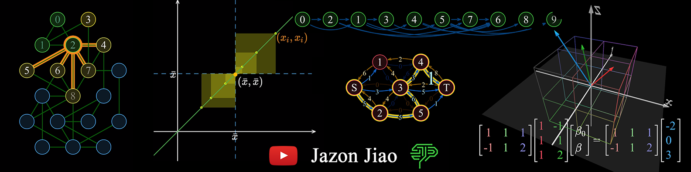
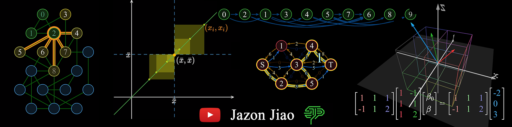

Manim.js
Manim.js is a JavaScript graphics library for math animations, based on p5.js and inspired by 3Blue1Brown's manim project.
I used Manim.js to make explanatory math videos on YouTube, and my channel now has 2,600+ subscribers.
Manim.js is a JavaScript graphics library for math animations, based on p5.js and inspired by 3Blue1Brown's manim project.
I used Manim.js to make explanatory math videos on YouTube, and my channel now has 2,600+ subscribers.